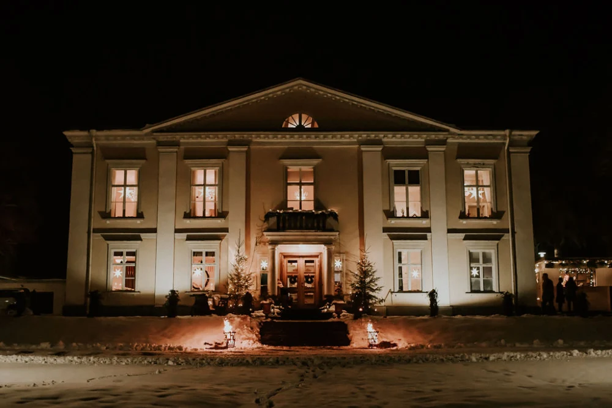
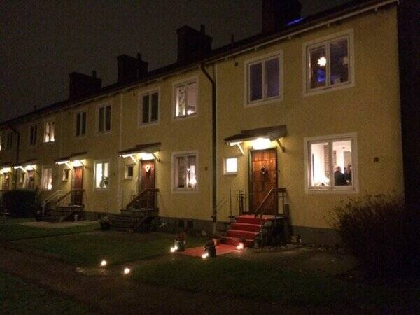
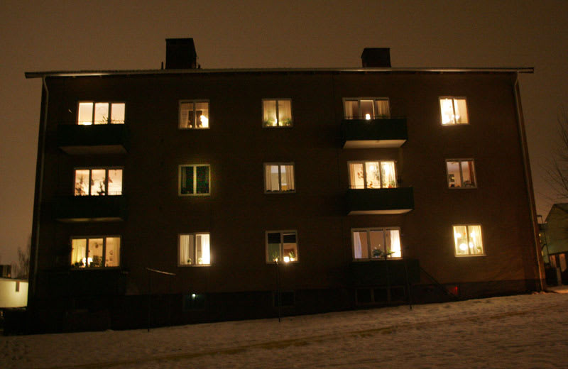

Namn: Dimslöjan (Herrgård), Hemsökelsetyp: Evigt ekande gråt (Lacryma continua)
Nyckelfakta (problem & krav):
- Inkluderat: En gråtande hembiträdesspöke som städar sämre.
- Störning: Slår alltid igen dörrar.
- Vatten: Kallt i alla kranar, alltid.
Pris: 1 500 000 Dukater
Se Detaljer & Boka VisningNamn: Sömnlösa Vinden (Liten Stuga), Hemsökelsetyp: Stöld av små metallföremål (Furtum metallicum)

Nyckelfakta (problem & krav):
- Egenskap: Hemmet stjäl nycklar och mynt nattetid.
- Ljus: Lampor flimrar 24/7 (ingen elektricitet garanteras).
- Garanti: Spöket älskar sin stuga och kommer aldrig flytta ut.
Pris: 4 500 000 Kr (Kusliga Riksdaler)
Se Detaljer & Boka VisningNamn: Källarens Tystnad (Radhus), Hemsökelsetyp: Visslande ljud i tomma korridorer (Sibilus inanitas)
Nyckelfakta (problem & krav):
- Ljud: Konstant, tyst visslande.
- Temperatur: En viss korridor är alltid 40 grader varm.
- Krav: Husdjur måste vara döda och utstoppade (spöket gillar inte konkurrens).
Pris: 999 999 Kr (Exorcistkostnader tillkommer)
Se Detaljer & Boka VisningNamn: Fjärde Våningen (Lägenhet), Hemsökelsetyp: Möbler flyttar sig 1 cm varje natt (Motus minimus)
Nyckelfakta (problem & krav):
- Störning: Möbler flyttar sig 1 cm varje natt.
- Skick: Svarta fläckar på väggar som inte går att måla över.
- Vaktmästare: Vaktmästaren har inte setts sedan 1983.
Pris: 2 100 000 Spöksedlar
Se Detaljer & Boka Visning